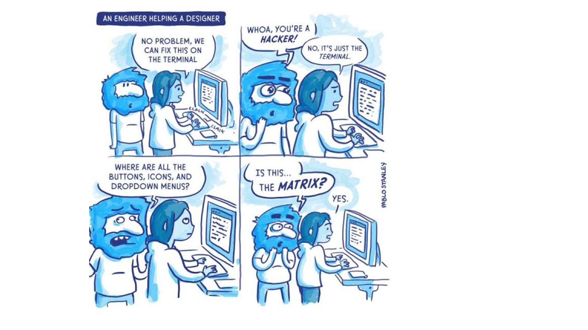

# install.packages("usethis")
# library(usethis)
# use_git_config(user.name = "Jane Doe", user.email = "jane@example.org")Fundamentos de Git y GitHub y su aplicación en proyectos colaborativos y reproducibles en R y RStudio
Introducción
El principal objetivo de este documento es dar a conocer la estructura, funcionalidad y potencialidad de Git (https://git-scm.com/), así como su interacción con GitHub (https://github.com/), para el trabajo en proyectos colaborativos y reproducibles. Ambas herramientas están ganando cada vez más importancia en diversos campos de estudio a medida que el volumen de datos aumenta y los análisis se hacen más complejos. Aprenderemos cómo Git puede usarse para controlar la trazabilidad de los cambios realizados en proyectos o archivos y veremos cómo este control de versiones es especialmente útil en proyectos colaborativos mediante el uso de un servidor de alojamiento en línea como GitHub. Aunque existen multitud de manuales disponibles gratuitamente sobre cómo utilizar Git y GitHub, estas herramientas son complejas y tienen una curva de aprendizaje pronunciada. Por ello, aquí hemos intentado agrupar nuestra experiencia adquirida después de varios años trabajando con estas herramientas para facilitar vuestra curva de aprendizaje ¡Vamos a por ello!
Por ejemplo, Git y GitHub nos pueden ayudar a solucionar algunos problemas comunes derivados de la creación de diferentes versiones que pueden ser un poco molestos:
- Sobreescritura de un archivo
- Versiones finales infinitas

- Trabajo por error en una versión que no era la final
- Creación de copias “en conflicto” cuando dos personas trabajan a la vez
- Ediciones sin control de cambios

Qué es Git
Git es un sistema avanzado de control de versiones (como el “control de cambios” de Microsoft Word) distribuido (Blischak, Davenport, and Wilson 2016; Ram 2013). Git permite “rastrear” el progreso de un proyecto a lo largo del tiempo ya que hace “capturas” del mismo a medida que evoluciona y los cambios se van registrando. Esto permite ver qué cambios se hicieron, quién los hizo y por qué, e incluso volver a versiones anteriores. Además, Git facilita el trabajo en paralelo de varios participantes. Mientras que en otros sistemas de control de versiones (p. ej. Subversion (SVN, https://subversion.apache.org/) o Concurrent Versions System (CVS, http://cvs.nongnu.org/)) hay un servidor central y cualquier cambio hecho por un usuario se sincroniza con este servidor y de ahí con el resto de usuarios, Git es un control de versiones distribuido que permite a todos los usuarios trabajar en el proyecto paralelamente e ir haciendo “capturas” del trabajo de cada uno para luego unirlos. Otras alternativas de control de versiones distribuido comparables a Git son Mercurial (https://www.mercurial-scm.org/) o Bazaar (https://bazaar.canonical.com/), pero Git es con diferencia el más utilizado.
Git surge en 2005, tras la ruptura de la relación entre la comunidad que estaba desarrollando Linux y la empresa comercial que desarrollaba BitKeeper (DVCS). En ese momento BitKeeper dejó de ser gratuita y esto llevó a la comunidad de desarrolladores de Linux (y en particular a Linus Torvalds, el creador de Linux) a desarrollar su propia herramienta para el control de versiones basándose en su experiencia al utilizar BitKeeper. Algunos de los objetivos del nuevo sistema eran velocidad, diseño sencillo, gran soporte para el desarrollo no lineal (ramas), sistema distribuido y capacidad para manejar grandes bases de datos. Por tanto, el propósito original de Git era ayudar a grupos de desarrolladores informáticos a trabajar en colaboración en grandes proyectos de software. En este sentido, veremos que hay múltiples soluciones para un mismo problema y que la curva de aprendizaje para no desarrolladores puede ser pronunciada.

Qué es GitHub
GitHub es un servidor de alojamiento en línea o repositorio remoto para albergar proyectos basados en Git que permite la colaboración entre diferentes usuarios o con uno mismo (Galeano 2018; Perez-Riverol et al. 2016). Un repositorio es un directorio donde desarrollar un proyecto que contiene todos los archivos necesarios para el mismo. Aunque existen distintos repositorios remotos (p. ej. GitLab, https://gitlab.com/, o Bitbucket, https://bitbucket.org/) con funcionalidad similar, GitHub es hoy en día el más utilizado. GitHub registra el desarrollo de los proyectos de manera remota, permite compartir proyectos entre distintos usuarios y proporciona la seguridad de la nube entre otras funciones. Cuando se trabaja en proyectos colaborativos, la base de la interacción entre Git y GitHub es que todos los colaboradores de un proyecto están de acuerdo en que GitHub contiene la copia principal del proyecto, es decir, GitHub contiene la copia centralizada del control de versiones distribuido o descentralizado.


Instalación
En este punto es necesario que tengas instalada la versión más reciente de R (https://cloud.r-project.org/), RStudio (https://www.rstudio.com/products/rstudio/download/), Git (https://happygitwithr.com/install-git.html) y una cuenta en GitHub (https://github.com/) creada.
üìùEjercicio 1.1
En el shell, preséntate a Git (Chapter 7: Git-Intro)
Tools -> Shell
git config --global user.name 'Nombre Apellido'git config --global user.email 'nombre@ejemplo.com'üëÄ Este debe ser el correo electr√≥nico asociado a tu cuenta de GitHub
⚡¿Qué es el shell? El shell (o terminal) es un programa en tu ordenador cuyo trabajo es ejecutar otros programas (ver https://happygitwithr.com/shell.html#shell). En este curso aprenderemos a trabajar principalmente desde la línea de comandos del shell aunque también veremos cómo hacerlo a través de un cliente como RStudio (https://www.rstudio.com/), recomendable para usuarios noveles de Git (ver https://happygitwithr.com/rstudio-git-github.html). RStudio incorpora una pestaña llamada “Git” que facilita la transición entre zonas de trabajo ya que contiene funcionalidades básicas de Git.



Compueba que has instalado Git correctamente:
git --versionPara ver el usuario utilizado para configurar Git:
git config user.namePara ver a qué cuenta de correo está asociado Git:
git config user.emailPara ver tanto el usuario como el correo asociado:
git config --global --list
Para la resolución de problemas durante la instalación recomendamos mirar aquí: https://happygitwithr.com/troubleshooting.html
Genera un PAT (Personal Access Token) para HTTPS
Git puede comunicarse con un servidor remoto utilizando uno de los dos protocolos: HTTPS o SSH. Nosotros utilzaremos HTTPS con personal access token (PAT, https://happygitwithr.com/https-pat.html).
# install.packages("usethis")
# install.packages("gitcreds")
# library(usethis)
# library(gitcreds)
# create_github_token() # generar un token
# gitcreds_set() # acceder al Git credential storeüëÄ Conviene describir el prop√≥sito del token en el campo Note, porque se pueden tener varios PATs. No podrás volver a ver este token, as√≠ que no cierres ni salgas de la ventana del navegador hasta que almacenes el PAT localmente. ¬°Trata este PAT como una contrase√±a!
Repositorios y proyectos
Un repositorio es como un “contenedor” donde desarrollar un proyecto.
Para crear un repositorio en GitHub damos a “+ New repository”. Aquí se indica el nombre, una pequeña descripción, y si quieres que sea público o privado. Se recomienda iniciar el repositorio con un archivo “README” (Initialize this repository with a README) para recoger cualquier información esencial para el uso del repositorio (estructura, descripción más detallada del contenido, etc.).
En RStudio, creamos un nuevo proyecto y lo conectamos al repositorio: File -> New project -> Version control -> Git -> copiar el URL del repositorio que hemos creado de GitHub (está en la página principal de nuestro repositorio, en “clone or download”). Seleccionamos el directorio donde queremos guardar el proyecto y pulsamos en “Create project”.
Si vamos al directorio seleccionado, encontraremos la carpeta conectada a Git y GitHub que hemos creado en nuestro ordenador. Podemos copiar aquí todos los archivos que nos interesan para el proyecto (datos, imágenes, etc).
⚡Para más información sobre cómo clonar el repositorio en GitHub (repositorio remoto) en nuestro ordenador (repositorio local) ver https://happygitwithr.com/rstudio-git-github.html para hacerlo desde RStudio y Galeano (2018) para hacerlo mediante la línea de comandos.
⚡En caso de querer conectar un antiguo proyecto de RStudio a Git y GitHub, puedes seguir los pasos que se describen aquí: https://happygitwithr.com/existing-github-first.html.
üìùEjercicio 1.2
Crea un repositorio en GitHub y conectalo a un nuevo proyecto de RStudio (esto generará un repositorio (carpeta) en tu ordenador en la ubicación que hayas especificado). Incluir un archivo “.gitignore”.
Crea un nuevo script de R en el directorio de trabajo (es decir, crea un script de R y guárdalo dentro del repositorio que has creado)
En RStudio ve a la pestaña Git para ver todos los documentos que han sido identificados por Git

Flujo de trabajo en Git y GitHub
Git es capaz de rastrear todos los archivos contenidos en un repositorio. Para comprender cómo Git registra los cambios y cómo podemos compartir dichos cambios con nuestros colaboradores es importante entender cómo se estructura Git y cómo se sincroniza con GitHub. Hay cuatro “zonas” de trabajo:
Directorio de trabajo (working directory): es donde se está trabajando. Esta zona se sincroniza con los archivos locales del ordenador.
Área de preparación (staging area o Index): es la zona intermedia entre el directorio de trabajo y el repositorio local de Git. Es la zona de borradores. El usuario debe seleccionar los archivos que se van a registrar en la siguiente “captura” de Git.
Repositorio local (local repository o HEAD): es donde se registran todos los cambios capturados por Git en tu ordenador.
Repositorio remoto (remote repository): es donde se registran todos los cambios capturados por Git en la nube (GitHub).

¿Cómo moverse de una zona a otra?
Al principio todos los cambios realizados están en amarillo porque Git no sabe que hacer con ellos. Estamos en el directorio de trabajo y puede que no nos interese guardar todos los cambios para el futuro.
Para añadir un cambio del directorio de trabajo al área de preparación hay que utilizar git add. Este comando indica a Git que se quieren incluir las actualizaciones de algún archivo en la próxima “captura” del proyecto y que Git las registre. Sin embargo, git add no afecta al repositorio local.
git add <nombre de archivo>: añade una actualización de algún archivo del directorio de trabajo al área de preparación.
Para ver el estado del directorio de trabajo y del área de preparación se utiliza git status. Este comando permite ver qué archivos están siendo rastreados por Git, qué cambios han sido añadidos al área de preparación (staged) y qué archivos están siendo registrados por Git.
Para registrar los cambios que nos interesen hay que utilizar git commit. Al ejecutar git commit se hace una ‚Äúcaptura‚Äù del estado del proyecto. Junto con el commit se a√±ade un mensaje con una peque√±a explicaci√≥n de los cambios realizados y por qu√© (p. ej. ‚Äúincluyo las referencias formateadas‚Äù). Cada git commit tiene un SHA (Secure Hash Algorithm) que es un c√≥digo alfanum√©rico que identifica inequ√≠vocamente ese commit (p. ej. 1d21fc3c33cxxc4aeb7823400b9c7c6bc2802be1). Parece dif√≠cil de entender, pero no te preocupes, s√≥lo tienes que recordar los siete primeros d√≠gitos 1d21fc3 üòÆ(es broma). Con el SHA siempre se pueden ver los cambios que se hicieron en ese commit y volver a esa versi√≥n fácilmente.
git commit -m "mensaje corto y descriptivo"
Si se hace un git commit y no se escribe el mensaje se abrirá el editor de git. El editor por defecto de Git es Vim. Para salir de Vim:
ESCy el siguiente paso depende del estado actual y de lo que quieras hacer:Si no se ha realizado ningún cambio en Vim, hay que escribir
:qyEnter/returnSi se han realizado cambios y quieres conservarlos, hay que escribir
:wqyEnter/returnSi se han realizado cambios y quieres descartarlos,
:q!yEnter/return
Por último, git push permite subir los cambios que hemos hecho a GitHub y quedarán visibles para nuestros colaboradores. Básicamente, git commit registra los cambios en el repositorio local y git push actualiza el repositorio remoto con los cambios y archivos asociados.
Cuando se retoma un proyecto tras horas, días o incluso meses, con git pull se descargan todas las actualizaciones que haya en GitHub (nuestras o de nuestros colaboradores), que se fusionarán (merge) con el último commit en nuestro repositorio local.

üìùEjercicio 1.3
En el proyecto generado en el Ejercicio 1.2, guardad y subid los cambios realizados a GitHub (git add + git commit + git push)
Propuesta de trabajo fin de curso
El trabajo se realizará en grupos de 2-3 personas. El objetivo es crear un proyecto rastreado por Git y alojado en GitHub donde se hayan aplicado los conocimientos aprendidos en el curso (flujo de trabajo -día 1-, trabajo en paralelo -día 2-, resolución de problemas con Git -día 3-, etc). El proyecto consistirá en crear un pequeño artículo de investigación en Quarto (día 4) que contenga un objetivo, análisis de unos datos (reales o inventados), un gráfico y un texto explicativo de los resultados.
La entrega consistirá en una presentación en clase (día 5) donde queremos ver el documento creado y que nos expliquéis las ramificaciones del proyecto, el historial de commits y otros detalles del flujo de trabajo. El día 5 habrá tiempo para trabajar en el proyecto antes de las presentaciones.
Algunos enlaces interasantes
Ciencia reproducible
Control de versiones (Git)
Integrar Git, GitHub y RStudio
Enseñar y aprender con GitHub
Session Info
Sys.time()[1] "2022-11-21 16:27:38 CET"git2r::repository()Local: main C:/Users/julen/OneDrive/Escritorio/GitHub-col/intro_git-github
Remote: main @ origin (https://github.com/Julenasti/intro_git-github.git)
Head: [71c84ea] 2022-11-18: typo readmesessionInfo()R version 4.2.1 (2022-06-23 ucrt)
Platform: x86_64-w64-mingw32/x64 (64-bit)
Running under: Windows 10 x64 (build 19044)
Matrix products: default
locale:
[1] LC_COLLATE=English_United Kingdom.utf8
[2] LC_CTYPE=English_United Kingdom.utf8
[3] LC_MONETARY=English_United Kingdom.utf8
[4] LC_NUMERIC=C
[5] LC_TIME=English_United Kingdom.utf8
attached base packages:
[1] stats graphics grDevices utils datasets methods base
loaded via a namespace (and not attached):
[1] digest_0.6.29 jsonlite_1.8.0 git2r_0.30.1 magrittr_2.0.3
[5] evaluate_0.16 rlang_1.0.6 stringi_1.7.8 cli_3.3.0
[9] rstudioapi_0.13 rmarkdown_2.16 tools_4.2.1 stringr_1.4.1
[13] htmlwidgets_1.5.4 xfun_0.32 yaml_2.3.5 fastmap_1.1.0
[17] compiler_4.2.1 htmltools_0.5.3 knitr_1.40.1 References
Blischak, John D., Emily R. Davenport, and Greg Wilson. 2016. “A Quick Introduction to Version Control with Git and GitHub.” PLOS Computational Biology 12 (1): e1004668. https://doi.org/10.1371/journal.pcbi.1004668.
Galeano, Javier. 2018. “¿Por qué usar GitHub? Diez pasos para disfrutar de GitHub y no morir en el intento.” Ecosistemas 27 (2): 140–41. https://doi.org/10.7818/ECOS.1604.
Perez-Riverol, Yasset, Laurent Gatto, Rui Wang, Timo Sachsenberg, Julian Uszkoreit, Felipe da Veiga Leprevost, Christian Fufezan, et al. 2016. “Ten Simple Rules for Taking Advantage of Git and GitHub.” PLOS Computational Biology 12 (7): e1004947. https://doi.org/10.1371/journal.pcbi.1004947.
Ram, Karthik. 2013. “Git Can Facilitate Greater Reproducibility and Increased Transparency in Science.” Source Code for Biology and Medicine 8 (1): 7. https://doi.org/10.1186/1751-0473-8-7.